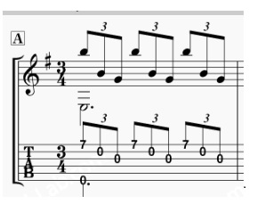

TuxGuitar ３連符の操作方法

禁じられた遊びの楽譜を登録しようとすると最初の小節から、３連符の音符が連続して現れる。 というか、禁じられた遊びは最後の小節を除けば、全て３連符である。
この３連符とは、１拍３連符で４分音符を３等分した長さの音符である
操作手順
- 音価の４分音符の状態で連符-３-をクリック、そして８分音符をクリック
- ＴＡＢに音符を設定していく
- 連符を終了するときは、音価の連符-３-をクリック
この状態で譜面に３連符の印が現れる
新しい音符を登録する譜面からに３連符の印が消え、通常の状態になる